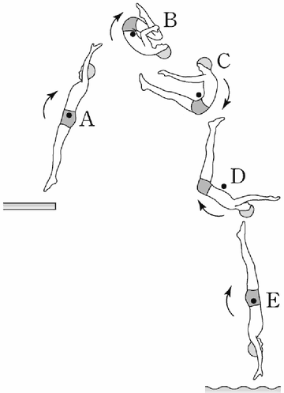

각운동량
지문을 먼저 읽고, 이해가 막히는 문단에서 ‘그림으로 보기’를 누르세요. 그림은 문단을 따라 바뀝니다.
1문단회전 운동을 하는 물체는 외부로부터 돌림힘이 작용하지 않는다면 일정한 빠르기로 회전 운동을 유지하는데, 이를 각운동량 보존 법칙이라 한다. 각운동량은 질량이 m인 작은 알갱이가 회전축으로부터 r만큼 떨어져 속도 v로 운동하고 있을 때 mvr로 표현된다. 그런데 회전하는 물체에 회전 방향으로 힘이 가해지거나 마찰 또는 공기 저항이 작용하게 되면, 회전하는 물체의 각운동량이 변화하여 회전 속도는 빨라지거나 느려지게 된다. 이렇게 회전하는 물체의 각운동량을 변화시키는 힘을 돌림힘이라고 한다.
2문단그러면 팽이와 같은 물체의 각운동량은 어떻게 표현할까? 아주 작은 균일한 알갱이들로 팽이가 이루어졌다고 볼 때, 이 알갱이 하나하나를 질량 요소라고 한다. 이 질량 요소 각각의 각운동량의 총합이 팽이 전체의 각운동량에 해당한다. 회전 운동에서 물체의 각운동량은 (각속도)×(회전 관성)으로 나타낸다. 여기에서 각속도는 회전 운동에서 물체가 단위 시간당 회전하는 각이다. 질량이 직선 운동에서 물체의 속도를 변화시키기 어려운 정도를 나타내듯이, 회전 관성은 회전 운동에서 각속도를 변화시키기 어려운 정도를 나타낸다. 즉, 회전체의 회전 관성이 클수록 그것의 회전 속도를 변화시키기 어렵다.
3문단회전체의 회전 관성은 회전체를 구성하는 질량 요소들의 회전 관성의 합과 같은데, 질량 요소들의 회전 관성은 질량 요소가 회전축에서 떨어져 있는 거리가 멀수록 커진다. 그러므로 질량이 같은 두 팽이가 있을 때 홀쭉하고 키가 큰 팽이보다 넓적하고 키가 작은 팽이가 회전 관성이 크다.
4문단각운동량 보존의 원리는 스포츠에서도 쉽게 확인할 수 있다. 피겨 선수에게 공중 회전수는 중요한데 이를 확보하기 위해서는 공중회전을 하는 동안 각속도를 크게 해야 한다. 이를 위해 피겨 선수가 공중에서 팔을 몸에 바짝 붙인 상태로 회전하는 것을 볼 수 있다. 피겨 선수의 회전 관성은 몸을 이루는 질량 요소들의 회전 관성의 합과 같다. 따라서 팔을 몸에 붙이면 팔을 구성하는 질량 요소들이 회전축에 가까워져서 팔을 폈을 때보다 몸 전체의 회전 관성이 줄어들게 된다. 점프 이후에 공중에서 각운동량은 보존되기 때문에 팔을 붙였을 때가 폈을 때보다 각속도가 커지는 것이다. 반대로 착지 직전에는 각속도를 줄여 착지 실수를 없애야 하기 때문에 양팔을 한껏 펼쳐 회전 관성을 크게 만드는 것이 유리하다.
윗글을 바탕으로 <보기>를 이해한 내용으로 적절한 것은?

그림: 발판에서 뛰어오른 다이빙 선수가 A(몸을 편 자세), B(몸을 웅크린 자세), C(다리를 앞으로 뻗고 앉은 듯한 자세), D(몸을 펴 가는 자세), E(몸을 곧게 편 입수 자세)를 거쳐 물에 들어가는 모습. 각 단계의 검은 점이 회전축이고 화살표가 회전 방향" style="display:block;width:100%;max-width:260px;margin:6px auto 8px">다이빙 선수가 발판에서 점프하여 공중회전하며 A～E 단계를 거쳐 1.5바퀴 회전하여 입수하고 있다. 여기에서 검은 점은 회전 운동의 회전축을 나타내며 회전 운동은 화살표 방향으로만 진행된다. 단, 다이빙 선수가 공중에 머무는 동안은 외부에서 돌림힘이 작용하지 않는다고 간주한다.